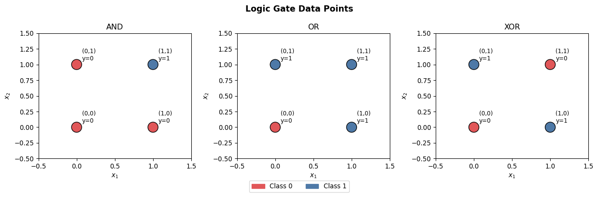
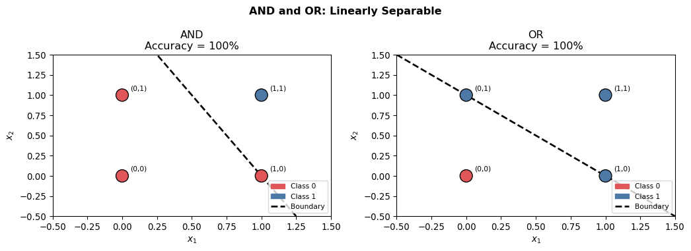
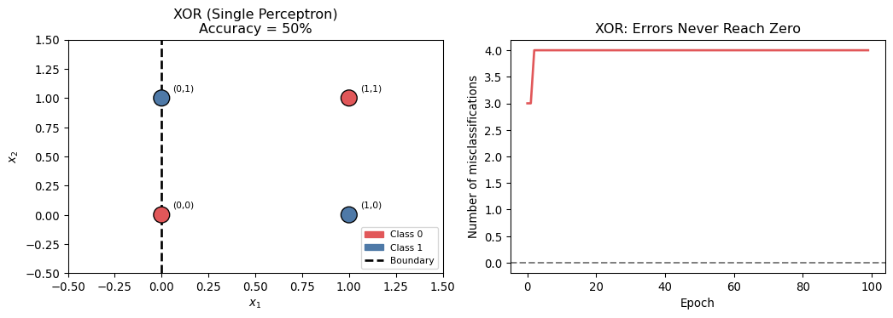
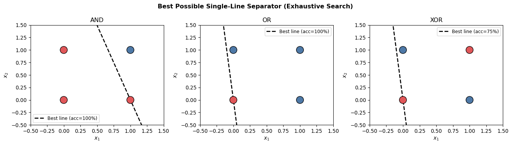

import numpy as np
import matplotlib.pyplot as plt
import matplotlib.patches as mpatchesLab2-1 - Perceptron Limits: Linear Separability and the XOR Problem

Objectives
- Implement the perceptron learning rule from scratch using NumPy.
- Train a perceptron on AND and OR gates and confirm that it converges to a perfect decision boundary.
- Demonstrate geometrically that no single straight line can separate XOR, and verify this through an exhaustive search.
NoteCore Concept: The Perceptron
A perceptron makes a prediction by computing a weighted sum of its inputs and passing it through a step function:
\[\hat{y} = \text{step}(\mathbf{w}^\top \mathbf{x} + b), \qquad \text{step}(z) = \begin{cases} 1 & z \geq 0 \\ 0 & z < 0 \end{cases}\]
The weight update rule corrects mistakes one sample at a time:
\[\mathbf{w} \leftarrow \mathbf{w} + \eta\,(y - \hat{y})\,\mathbf{x}, \qquad b \leftarrow b + \eta\,(y - \hat{y})\]
where \(\eta\) is the learning rate. The Perceptron Convergence Theorem guarantees that this rule finds a perfect solution in finite steps if and only if the data is linearly separable.
1. Setup
2. Logic Gate Datasets
Each logic gate has four possible input pairs. The table below summarizes the labels for AND, OR, and XOR.
X = np.array([[0, 0],
[0, 1],
[1, 0],
[1, 1]], dtype=float)
y_and = np.array([0, 0, 0, 1]) # AND: 1 only when both inputs are 1
y_or = np.array([0, 1, 1, 1]) # OR: 0 only when both inputs are 0
y_xor = np.array([0, 1, 1, 0]) # XOR: 1 only when inputs differBefore training anything, plot the four points for each gate and color them by class. This visual check is important: for AND and OR you should be able to draw a separating line by hand, but not for XOR.
fig, axes = plt.subplots(1, 3, figsize=(13, 4))
gate_data = [
(y_and, "AND"),
(y_or, "OR"),
(y_xor, "XOR"),
]
for ax, (y_gate, name) in zip(axes, gate_data):
colors = ['#e15759' if label == 0 else '#4e79a7' for label in y_gate]
ax.scatter(X[:, 0], X[:, 1], c=colors, s=250, edgecolors='k', zorder=5)
for xi, yi in zip(X, y_gate):
ax.annotate(f"({int(xi[0])},{int(xi[1])})\ny={yi}",
xy=xi, xytext=(xi[0] + 0.07, xi[1] + 0.07), fontsize=9)
ax.set_xlim(-0.5, 1.5); ax.set_ylim(-0.5, 1.5)
ax.set_xlabel("$x_1$"); ax.set_ylabel("$x_2$")
ax.set_title(name)
red_patch = mpatches.Patch(color='#e15759', label='Class 0')
blue_patch = mpatches.Patch(color='#4e79a7', label='Class 1')
fig.legend(handles=[red_patch, blue_patch], loc='lower center',
ncol=2, fontsize=10, bbox_to_anchor=(0.5, -0.05))
plt.suptitle("Logic Gate Data Points", fontsize=13, fontweight='bold')
plt.tight_layout()
plt.show()
TipBefore You Continue
Look at the XOR plot. Class 1 (blue) sits at \((0,1)\) and \((1,0)\), while class 0 (red) sits at \((0,0)\) and \((1,1)\). Try to draw a single straight line that puts all red points on one side and all blue points on the other. You will find it is impossible. The next sections confirm this rigorously.
3. Perceptron Implementation
perceptron.py
class Perceptron:
def __init__(self, lr=0.1, n_epochs=50):
self.lr = lr
self.n_epochs = n_epochs
self.w = None
self.b = None
self.errors_per_epoch = []
def fit(self, X, y):
n_features = X.shape[1]
self.w = np.zeros(n_features)
self.b = 0.0
self.errors_per_epoch = []
for _ in range(self.n_epochs):
errors = 0
for xi, yi in zip(X, y):
y_hat = self._predict_single(xi)
delta = self.lr * (yi - y_hat)
self.w += delta * xi
self.b += delta
errors += int(delta != 0)
self.errors_per_epoch.append(errors)
def _predict_single(self, x):
return int(np.dot(self.w, x) + self.b >= 0)
def predict(self, X):
return np.array([self._predict_single(xi) for xi in X])4. Decision Boundary Helper
The decision boundary is the line where the net input is exactly zero. Solving \(w_1 x_1 + w_2 x_2 + b = 0\) for \(x_2\) gives:
\[x_2 = -\frac{w_1}{w_2}\,x_1 - \frac{b}{w_2}\]
The slope is \(-w_1/w_2\) and the vertical intercept is \(-b/w_2\).
plot_boundary.py
def plot_decision_boundary(ax, model, X, y, title, show_result=True):
colors = ['#e15759' if label == 0 else '#4e79a7' for label in y]
ax.scatter(X[:, 0], X[:, 1], c=colors, s=200, edgecolors='k', zorder=5)
for xi, yi in zip(X, y):
ax.annotate(f"({int(xi[0])},{int(xi[1])})",
xy=xi, xytext=(xi[0] + 0.06, xi[1] + 0.06), fontsize=8)
x_range = np.linspace(-0.5, 1.5, 200)
if abs(model.w[1]) > 1e-6:
x2_line = -(model.w[0] * x_range + model.b) / model.w[1]
ax.plot(x_range, x2_line, 'k--', linewidth=2, label='Decision boundary')
elif abs(model.w[0]) > 1e-6:
ax.axvline(-model.b / model.w[0], color='k',
linestyle='--', linewidth=2, label='Decision boundary')
else:
ax.text(0.5, 0.5, 'No boundary\n(weights still zero)',
transform=ax.transAxes, ha='center', va='center',
fontsize=9, color='gray')
ax.set_xlim(-0.5, 1.5); ax.set_ylim(-0.5, 1.5)
ax.set_xlabel("$x_1$"); ax.set_ylabel("$x_2$")
if show_result:
preds = model.predict(X)
acc = (preds == y).mean()
ax.set_title(f"{title}\nAccuracy = {acc:.0%}")
else:
ax.set_title(title)
red_p = mpatches.Patch(color='#e15759', label='Class 0')
blue_p = mpatches.Patch(color='#4e79a7', label='Class 1')
line_p = plt.Line2D([0],[0], color='k', linestyle='--',
linewidth=2, label='Boundary')
ax.legend(handles=[red_p, blue_p, line_p], fontsize=8, loc='lower right')5. Training on AND and OR
fig, axes = plt.subplots(1, 2, figsize=(11, 4))
for ax, (y_gate, name) in zip(axes, [(y_and, 'AND'), (y_or, 'OR')]):
p = Perceptron(lr=0.1, n_epochs=20)
p.fit(X, y_gate)
plot_decision_boundary(ax, p, X, y_gate, name)
print(f"{name} errors per epoch: {p.errors_per_epoch}")
plt.suptitle("AND and OR: Linearly Separable", fontsize=12, fontweight='bold')
plt.tight_layout()
plt.show()AND errors per epoch: [2, 3, 3, 0, 0, 0, 0, 0, 0, 0, 0, 0, 0, 0, 0, 0, 0, 0, 0, 0]
OR errors per epoch: [2, 2, 1, 0, 0, 0, 0, 0, 0, 0, 0, 0, 0, 0, 0, 0, 0, 0, 0, 0]
Both converge within a few epochs. The dashed line cleanly separates the two classes.
6. Attempting XOR with a Single Perceptron
p_xor = Perceptron(lr=0.1, n_epochs=100)
p_xor.fit(X, y_xor)
print("XOR predictions :", p_xor.predict(X))
print("XOR ground truth:", y_xor)
print(f"Accuracy : {(p_xor.predict(X) == y_xor).mean():.0%}")
print(f"Errors per epoch: {p_xor.errors_per_epoch}")XOR predictions : [1 1 0 0]
XOR ground truth: [0 1 1 0]
Accuracy : 50%
Errors per epoch: [3, 3, 4, 4, 4, 4, 4, 4, 4, 4, 4, 4, 4, 4, 4, 4, 4, 4, 4, 4, 4, 4, 4, 4, 4, 4, 4, 4, 4, 4, 4, 4, 4, 4, 4, 4, 4, 4, 4, 4, 4, 4, 4, 4, 4, 4, 4, 4, 4, 4, 4, 4, 4, 4, 4, 4, 4, 4, 4, 4, 4, 4, 4, 4, 4, 4, 4, 4, 4, 4, 4, 4, 4, 4, 4, 4, 4, 4, 4, 4, 4, 4, 4, 4, 4, 4, 4, 4, 4, 4, 4, 4, 4, 4, 4, 4, 4, 4, 4, 4]fig, axes = plt.subplots(1, 2, figsize=(11, 4))
plot_decision_boundary(axes[0], p_xor, X, y_xor, "XOR (Single Perceptron)")
axes[1].plot(p_xor.errors_per_epoch, color='#e15759', linewidth=2)
axes[1].set_xlabel("Epoch"); axes[1].set_ylabel("Number of misclassifications")
axes[1].set_title("XOR: Errors Never Reach Zero")
axes[1].axhline(0, color='gray', linestyle='--')
plt.tight_layout()
plt.show()
WarningWhy the Error Never Reaches Zero
The perceptron update rule is guaranteed to converge only for linearly separable problems. For XOR, the weights oscillate indefinitely. The errors-per-epoch chart stays above zero regardless of how many epochs you run. This is not a bug in the implementation: it is a mathematical impossibility.
7. Geometric Proof: Exhaustive Line Search
To make the impossibility of XOR separation indisputable, we exhaustively check every possible line in the 2D plane. A line parameterized by slope \(k\) and intercept \(c\) predicts class 1 whenever \(x_2 > k x_1 + c\):
\[\hat{y} = \mathbf{1}[x_2 > k x_1 + c]\]
def best_linear_accuracy(X, y, k_range, c_range):
"""Sweep all (k, c) combinations and return the best accuracy found."""
best_acc = 0.0
best_k, best_c = 0.0, 0.0
for k in k_range:
for c in c_range:
preds = (X[:, 1] > k * X[:, 0] + c).astype(int)
acc = (preds == y).mean()
if acc > best_acc:
best_acc, best_k, best_c = acc, k, c
return best_acc, best_k, best_c
k_vals = np.linspace(-10, 10, 400)
c_vals = np.linspace(-3, 3, 400)
best_acc_and, bk_and, bc_and = best_linear_accuracy(X, y_and, k_vals, c_vals)
best_acc_or, bk_or, bc_or = best_linear_accuracy(X, y_or, k_vals, c_vals)
best_acc_xor, bk_xor, bc_xor = best_linear_accuracy(X, y_xor, k_vals, c_vals)
print(f"Best accuracy on AND by any single line: {best_acc_and:.0%}")
print(f"Best accuracy on OR by any single line: {best_acc_or:.0%}")
print(f"Best accuracy on XOR by any single line: {best_acc_xor:.0%} <- hard ceiling")Best accuracy on AND by any single line: 100%
Best accuracy on OR by any single line: 100%
Best accuracy on XOR by any single line: 75% <- hard ceilingfig, axes = plt.subplots(1, 3, figsize=(14, 4))
x_range = np.linspace(-0.5, 1.5, 200)
for ax, (y_gate, name, bk, bc, bacc) in zip(axes, [
(y_and, "AND", bk_and, bc_and, best_acc_and),
(y_or, "OR", bk_or, bc_or, best_acc_or),
(y_xor, "XOR", bk_xor, bc_xor, best_acc_xor),
]):
colors = ['#e15759' if l == 0 else '#4e79a7' for l in y_gate]
ax.scatter(X[:, 0], X[:, 1], c=colors, s=200, edgecolors='k', zorder=5)
ax.plot(x_range, bk * x_range + bc, 'k--', linewidth=2,
label=f'Best line (acc={bacc:.0%})')
ax.set_xlim(-0.5, 1.5); ax.set_ylim(-0.5, 1.5)
ax.set_xlabel("$x_1$"); ax.set_ylabel("$x_2$")
ax.set_title(name)
ax.legend(fontsize=9)
plt.suptitle("Best Possible Single-Line Separator (Exhaustive Search)",
fontsize=12, fontweight='bold')
plt.tight_layout()
plt.show()
Even after checking 160,000 candidate lines, XOR cannot exceed 75% accuracy with a single boundary. Three of the four points can be separated, but the fourth is always misclassified.
ImportantKey Takeaway
AND and OR are linearly separable: a single line achieves 100% accuracy. XOR is not linearly separable: 75% is the hard mathematical ceiling for any single straight line. This limitation motivated the development of multi-layer networks, where stacking two perceptrons creates a non-linear boundary capable of solving XOR.
Expected Output
After Section 6 (XOR attempt), you should see:
XOR predictions : [0 1 0 1] (some wrong pattern that never matches ground truth fully)
XOR ground truth: [0 1 1 0]
Accuracy : 50% (or 75%, never 100%)
Errors per epoch: [2, 2, 2, ..., 2]After Section 7 (exhaustive search):
Best accuracy on AND by any single line: 100%
Best accuracy on OR by any single line: 100%
Best accuracy on XOR by any single line: 75% <- hard ceilingReferences
- Rosenblatt, F. (1958). The Perceptron: A Probabilistic Model for Information Storage and Organization in the Brain.
- Minsky, M. and Papert, S. (1969). Perceptrons: An Introduction to Computational Geometry. MIT Press.
- Neural Networks and Deep Learning, Chapter 1 (Nielsen)